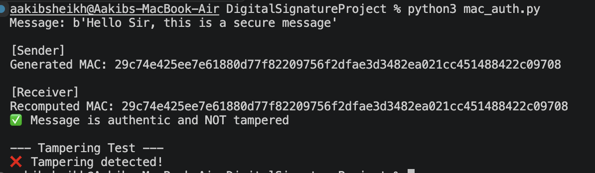

import hmac
import hashlib
secret_key = b"my_secret_key"
message = b"Hello Sir, this is a secure message"
print("Message:", message)
# Sender
mac = hmac.new(secret_key, message, hashlib.sha256).hexdigest()
print("\n[Sender]")
print("Generated MAC:", mac)
# Receiver
received_mac = hmac.new(secret_key, message, hashlib.sha256).hexdigest()
print("\n[Receiver]")
print("Recomputed MAC:", received_mac)
if hmac.compare_digest(mac, received_mac):
print("Message is authentic and NOT tampered")
else:
print("Message is tampered")
# Tampering Test
print("\n--- Tampering Test ---")
fake_message = b"Hello hacked message"
fake_mac = hmac.new(secret_key, fake_message, hashlib.sha256).hexdigest()
if hmac.compare_digest(mac, fake_mac):
print("Fake verified")
else:
print("Tampering detected")
